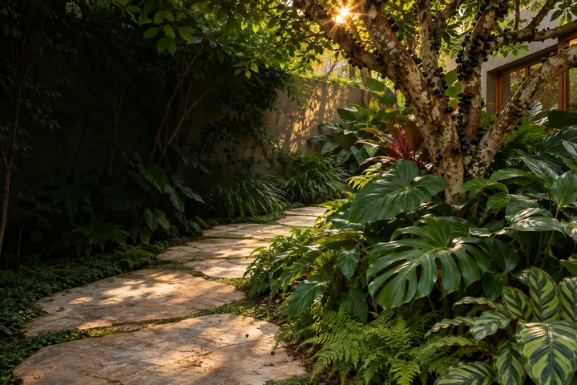
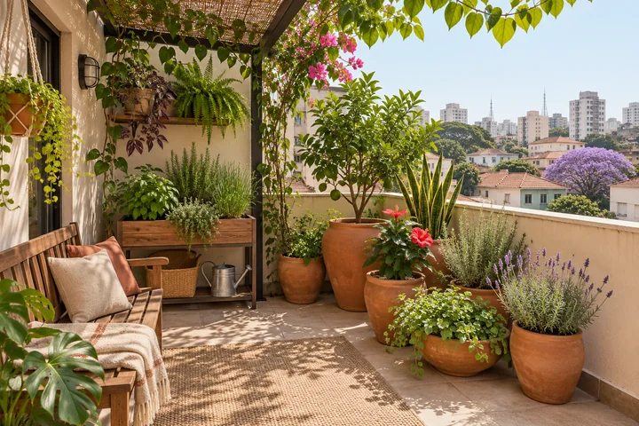
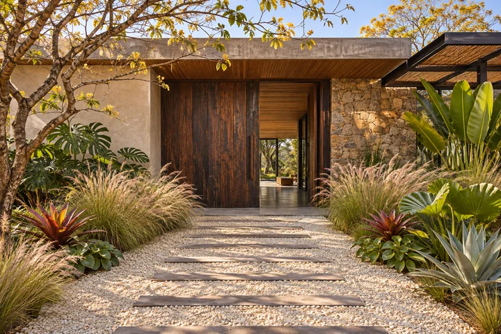

Caminho sombreado
Canteiros protegidos por árvores deixam a circulação mais fresca. Observe por onde se caminha e onde a luz consegue chegar.
- Luz
- Meia-sombra
- Tipo de espaço
- Jardim ou quintal

Explore o ambiente e leve ao pedido a referência que mais se aproxima do seu espaço.
Canteiros protegidos por árvores deixam a circulação mais fresca. Observe por onde se caminha e onde a luz consegue chegar.

Vasos agrupados aproveitam as bordas do terraço. O espaço livre permite sentar, circular e alcançar cada vaso na hora de cuidar.

A faixa de plantio acompanha o percurso até a porta. Antes do projeto, vale observar as horas de sol e como a água escoa depois da chuva.
Uma passagem, um lugar para sentar ou espaço para brincar. Conte como você pretende usar a área. Na visita, a equipe olha a luz, a circulação e o que já cresce ali.